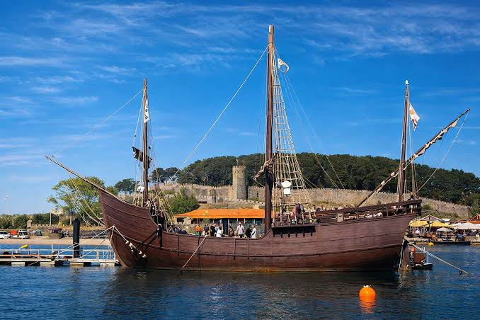
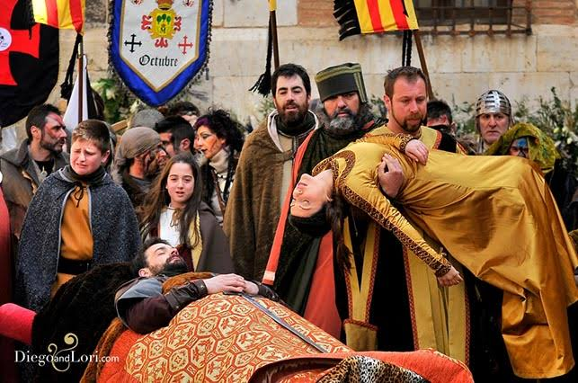
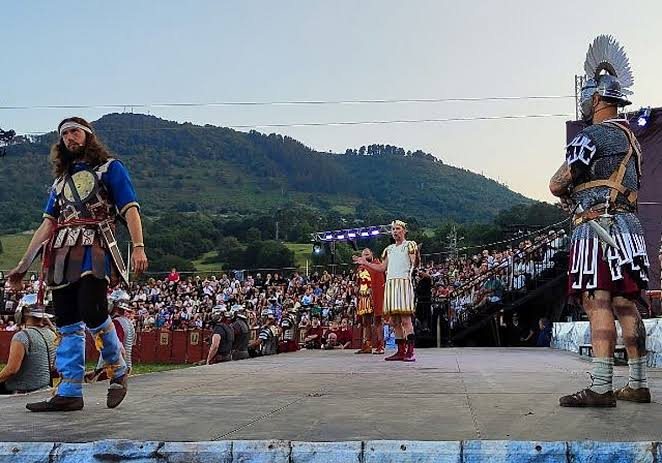

Fiestas del Motín de Aranjuez
Aranjuez (Madrid) · Recreación histórica · "La primera fiesta de la Comunidad de Madrid declarada de Interés Turístico Internacional."
- Los que actúan en la Escenificación son vecinos de Aranjuez que han pasado el verano ensayando bajo dirección profesional. Lo que ocurre en la Plaza de Parejas es el resultado de meses de trabajo de gente que al día siguiente vuelve a su empleo.
- El hecho que se recrea ocurrió en esta misma ciudad y cambió el curso del país: de aquel marzo salieron la abdicación de un rey y la antesala de una guerra. Saberlo cambia la manera de escuchar el grito de «¡Muera Godoy!».
- La fiesta tiene una Hora sin ruido, todos los días de 19:00 a 21:00 en el recinto ferial, pensada para quienes tienen sensibilidad auditiva. Es una decisión del municipio que dice bastante de cómo entienden su propia fiesta.
La esencia de la fiesta
Ocho mil sillas puestas de cara a la fachada del Palacio Real y, sobre la explanada de granito, ciento setenta vecinos vestidos de 1808. El decorado es el palacio de verdad, el mismo edificio que vio caer a Godoy aquel mes de marzo. Cuando arranca el grito de «¡Muera Godoy!», lo que se oye es gente de Aranjuez contando lo que pasó en Aranjuez.
¿En qué consiste?
Las Fiestas del Motín de Aranjuez son una recreación histórica popular de los hechos que en marzo de 1808 derribaron a Manuel Godoy, pusieron fin al gobierno de Carlos IV y abrieron la puerta a la Guerra de la Independencia. Durante cinco días de principios de septiembre, el casco histórico se convierte en escenario de tres actos muy distintos: el pasacalles nocturno del Asalto a la Casa de Godoy el viernes, la Escenificación del Motín en la Plaza de Parejas el sábado y el Descenso Pirata del Tajo el domingo. Fue la primera celebración de la Comunidad de Madrid en obtener la declaración de Interés Turístico Internacional, en 2014.
La clave de la fiesta es que los actores son los propios vecinos. Cada verano el Ayuntamiento abre la inscripción de amotinados voluntarios en el Centro Cultural Isabel de Farnesio, y quien se apunta elige entre tres frentes: la escenificación del sábado, el Pasacalles o el Asalto. Los seleccionados pasan semanas de ensayos bajo la dirección de la compañía teatral profesional Yllana, que firma la dramaturgia y la puesta en escena. La convocatoria es abierta y el resultado se nota en la Plaza de Parejas la noche del sábado.
La fiesta también incluye un Mercado Goyesco, una feria de artesanía y una Corrida Goyesca en la histórica plaza de toros del Real Sitio, que amplían el ambiente de época más allá de los tres actos principales.
Historia
Entre el 17 y el 19 de marzo de 1808, soldados, campesinos y vecinos asaltaron en Aranjuez la casa del valido Manuel Godoy. El detonante era el miedo: temían que facilitara el paso de las tropas de Napoleón y que la familia real huyera hacia el sur, como acababa de hacer la portuguesa. La mañana del 19 de marzo Godoy apareció escondido entre esteras de su propio palacio y fue llevado al cuartel de Guardias de Corps. Ese mismo mediodía, Carlos IV abdicó en su hijo Fernando VII. Fue la primera vez en España que una revuelta popular forzó la renuncia de un rey, y la antesala inmediata de la Guerra de la Independencia.
La fiesta moderna arrancó en 1981, con la primera representación teatral en el Patio de Armas del Palacio Real el 5 de septiembre de 1982. Nació para añadir un componente cultural a las ferias de septiembre y fue ganando peso hasta convertirse en la fiesta central de la ciudad. Desde 1984 cada edición nombra a un Amotinado Mayor, la personalidad, institución o colectivo que encabeza la fiesta ese año.
Marco normativo
- Obtuvo la declaración de Fiesta de Interés Turístico Nacional en 1990.
- La Secretaría de Estado de Turismo le concedió el título de Fiesta de Interés Turístico Internacional por Resolución de 23 de julio de 2014, publicada en el BOE del 1 de agosto de 2014.
- Fue la primera fiesta de la Comunidad de Madrid con esa declaración. En 2026 se sumó la Semana Cervantina de Alcalá de Henares, por Resolución de 8 de septiembre de 2026, publicada en el BOE n.º 232 de 19 de septiembre.
Fechas 2027
La edición de 2027 va del miércoles 1 al domingo 5 de septiembre, y el Ayuntamiento declara festivo local uno de los días centrales. El peso está en el fin de semana: el Asalto el viernes, la Escenificación el sábado y el Descenso Pirata del Tajo el domingo. El pregonero y el Amotinado Mayor de cada año los anuncia el Ayuntamiento con el programa.
Programa
- Miércoles 1 · Plaza de la Constitución Concierto de apertura y arranque del recinto ferial con el Día del Niño. Es la jornada de precalentamiento, antes de que la fiesta se declare abierta.
- Jueves 2 · Plaza de la Constitución Pregón de Fiestas, acompañado por la banda de la escuela municipal de música. A continuación, el disparo del Fresón y el Espárrago anuncia oficialmente el comienzo. Abre también el Mercado Goyesco en el Paseo del Jardín de Isabel II.
- Viernes 4 · 21:30 · Calles del Real Sitio El Pasacalles y, a continuación, el Asalto a la Casa de Godoy, teatro itinerante que sale de la Plaza de la Constitución. Los amotinados, con trajes de época y antorchas, recorren las calles Stuart y Príncipe hasta la fachada del Palacio de Godoy persiguiendo al valido. El humo y el eco entre los edificios de piedra son el prólogo de la noche siguiente.
- Sábado 5 · 21:30 y 22:00 · Plaza de Parejas Nombramiento oficial del Amotinado Mayor y, a continuación, la Escenificación del Motín, la obra central. Unos 170 vecinos actúan en la explanada de 7.000 m² con la fachada monumental del palacio detrás, bajo dirección de Yllana. Entrada libre hasta completar aforo, que ronda las 8.000 personas.
- Domingo 6 · Río Tajo y plaza de toros El Descenso Pirata del Tajo por la mañana, con embarcaciones de fabricación propia y sin motor entre el antiguo puente colgante y el Puente de Barcas, premiando la originalidad y la estética. Por la tarde, Corrida Goyesca a las 18:30 en la plaza de toros, y fuegos artificiales de cierre a las 23:00.
El Motín de 1808 y su escenario
El Palacio Real de Aranjuez, Patrimonio de la Humanidad desde 2001 junto al paisaje cultural del Real Sitio, era en 1808 la residencia de primavera de la familia real. La Plaza de Parejas, donde se monta el escenario cada septiembre, es la explanada contigua al palacio, con sus 7.000 metros cuadrados de granito y los jardines del Parterre al fondo.
El Palacio de Godoy, donde culmina el asalto del viernes, está a pocos minutos a pie, y el río Tajo que rodea el Real Sitio es el mismo cauce que bajan los piratas cada domingo. La geografía de la fiesta y la del hecho histórico son la misma.
Música y sonido
Lo que mueve el Asalto del viernes es la percusión. Los tambores militares marcan el paso de la comitiva por las calles estrechas del casco histórico, y en esa acústica de piedra del siglo XVIII el redoble llega rebotado desde varias esquinas a la vez, así que se oye venir a la turba antes de verla. Encima van los gritos, que es la otra mitad del sonido.
El registro formal lo pone la Banda de la Escuela Municipal de Música Joaquín Rodrigo, que toca antes del pregón del jueves y abre la parte institucional de la fiesta. Y el domingo, el cierre lo marcan los fuegos artificiales de las once de la noche.
- Para el Asalto, colócate en un tramo estrecho del recorrido y espera con el oído. El tambor entra antes que las antorchas, y ese par de segundos es lo mejor del pasacalles.
- Si te interesa la banda municipal, el pregón del jueves es el único acto con música de programa. El resto del fin de semana el sonido es de calle.
No te lo puedes perder
El Asalto a la Casa de Godoy
Viernes · Por la noche · Calles del Real SitioLos amotinados recorren el casco histórico con antorchas hasta la fachada del Palacio de Godoy. La oscuridad, el humo y los edificios de piedra hacen el trabajo que en otras recreaciones hace el decorado.
¿Por qué no perdértelo?
Porque es el único momento de la fiesta en que el espectador está dentro de la escena, no delante de ella. La comitiva avanza entre el público por las calles; no hay separación entre actores y testigos. Es teatro de calle en su forma más directa y la antesala perfecta para entender qué va a ocurrir la noche siguiente en la Plaza de Parejas.
La Representación en la Plaza de Parejas
Sábado · Por la noche · Plaza de ParejasCiento setenta vecinos actuando en la explanada frente al palacio, con el nombramiento del Amotinado Mayor abriendo la noche media hora antes. La dirección profesional se nota en el ritmo y en cómo se mueve tanta gente sin estorbarse.
¿Por qué no perdértelo?
Porque el escenario es el palacio donde pasó lo que se cuenta y los actores son del pueblo donde pasó. Esa coincidencia de lugar y de gente es lo que separa esta escenificación de un montaje itinerante.
El Descenso Pirata del Tajo
Domingo · Por la mañana · Río TajoEl contrapunto carnavalesco. Embarcaciones sin motor construidas a mano bajan el Tajo compitiendo por premios a la originalidad. El humor y el colorido son lo contrario del ambiente goyesco de los dos días anteriores, y eso es parte del plan.
¿Por qué no perdértelo?
Porque el Descenso lleva desde 1980 siendo la demostración de que Aranjuez no se toma su historia solo en serio: también la celebra con ironía. La misma ciudad que la noche anterior lloraba a Godoy, al día siguiente lo manda al río en una barca de cartón. Ese doble registro es lo que hace al Motín difícil de reducir a una sola imagen.
El Mercado Goyesco en el Real Sitio
Todos los días · Casco histórico · AranjuezArtesanos, indumentaria de época y ambiente del siglo XIX por el Paseo del Jardín de Isabel II durante todos los días. El trazado borbónico, con sus ejes anchos y sus jardines, le da al mercado una escala distinta a la de un casco medieval.
¿Por qué no perdértelo?
Porque pasear por el Real Sitio con indumentaria goyesca alrededor explica de golpe por qué Aranjuez fue ciudad de corte. Es la parte de la fiesta que se disfruta sin horario.
Consejos prácticos
- El Cercanías C-3 desde Atocha deja en el centro en unos 45 minutos y es la opción más cómoda desde Madrid. En coche, la A-4 tarda algo parecido, pero aparcar en el centro durante las fiestas es complicado.
- Para el Asalto del viernes, sitúate en el recorrido antes de que salga la comitiva. Las calles Stuart y Príncipe, en el tramo hacia el Palacio de Godoy, tienen la anchura justa para que la turba de antorchas llene el espacio.
- Para la Escenificación del sábado, llega con margen y elige posición antes de que arranque el acto. El aforo es grande pero la plaza se llena.
- Las noches de principios de septiembre ya refrescan, sobre todo junto al Tajo, así que para los actos nocturnos conviene algo de abrigo ligero.
- Los espárragos y los fresones de la vega del Tajo son los productos identitarios de la zona, aunque su temporada fuerte sea la primavera. Los restaurantes del Real Sitio los trabajan todo el año y el Mercado Goyesco tiene puestos de gastronomía.
- El alojamiento en la ciudad es escaso para el volumen de visitantes. Madrid está a unos 50 kilómetros y resuelve si no encuentras plaza, pero conviene reservar con semanas de antelación en cualquier caso.
Vocabulario del Motín
- Fresón y Espárrago
- Nombre del disparo tradicional que sigue al pregón del jueves y con el que se declaran abiertas las fiestas. Los dos productos de la vega del Tajo dan nombre a la salva.
- Ribereño / Arancetano
- Gentilicio de uso generalizado para los habitantes de Aranjuez, por la posición de la ciudad en la confluencia del Tajo y el Jarama. El Ayuntamiento lo alterna con arancetano, de raíz latina, que es la forma culta.
- Amotinado / Amotinada
- Vecino que participa en la Escenificación como parte de la turba. Es el elenco principal de la obra, no un figurante, y se accede por convocatoria libre del Ayuntamiento cada verano.
- Amotinado Mayor
- Título honorífico que desde 1984 recibe cada año una personalidad, institución o colectivo destacado por su labor social, cultural o cívica. Su papel es encabezar la fiesta, y se nombra en la Plaza de Parejas justo antes de la obra. Lo han recibido Camilo José Cela, la Cruz Roja Española y la ONCE, entre otros.
- Pirata
- Participante del Descenso Pirata del Tajo. La figura no tiene relación con los hechos de 1808: es la invención festera del domingo. Cada pirata o cuadrilla construye su propia embarcación y compite por los premios de la organización.
- Goyesco / Goyesca
- Adjetivo que califica lo relacionado con la estética de la época de Goya: indumentaria, escenografía, mercado y corrida. La fiesta se ambienta en los años del Motín y la Guerra de la Independencia, que son los que el pintor retrató.
Galería


Enlaces útiles
- Ayuntamiento del Real Sitio y Villa de Aranjuez: programa oficial
- Turismo de la Comunidad de Madrid
- Patrimonio Nacional: Palacio Real de Aranjuez
Última verificación de datos: 2026-10-19. Fechas y programa contrastados con el Ayuntamiento de Aranjuez; declaraciones oficiales cotejadas en el BOE.
Preguntas frecuentes
- ¿Cuándo se celebran las Fiestas del Motín de Aranjuez?
- Del 2 al 6 de septiembre de 2026, de miércoles a domingo, con el viernes 4 declarado festivo local. El núcleo está en el fin de semana. El programa completo y el cartel musical los publica el Ayuntamiento antes de cada edición.
- ¿Qué es la Representación del Motín de Aranjuez?
- Una obra de teatro al aire libre en la Plaza de Parejas, con la fachada del Palacio Real como telón de fondo. Unos 170 vecinos actúan como la turba que en marzo de 1808 derribó el poder de Godoy, bajo dirección de la compañía Yllana. La entrada es libre hasta completar un aforo de unas 8.000 personas.
- ¿Qué es el Descenso Pirata del Tajo?
- Una cabalgata fluvial que desde 1980 llena el Tajo de embarcaciones construidas a mano, sin motor. Los participantes bajan desde el antiguo puente colgante hasta el Puente de Barcas compitiendo por premios a la originalidad. El número de edición lo publica el Ayuntamiento cada año.
- ¿Cuántas fiestas de Interés Turístico Internacional hay en la Comunidad de Madrid?
- Dos. El Motín de Aranjuez fue la primera, por resolución de la Secretaría de Estado de Turismo de 23 de julio de 2014, y en 2026 se sumó la Semana Cervantina de Alcalá de Henares, por resolución de 8 de septiembre. El Motín había obtenido antes, en 1990, la declaración de Interés Turístico Nacional.
- ¿Qué ocurrió exactamente en el Motín de Aranjuez de 1808?
- Entre el 17 y el 19 de marzo de 1808, soldados y vecinos asaltaron la casa del valido Manuel Godoy, temerosos de que facilitase el paso de las tropas napoleónicas y la huida de la familia real. La mañana del 19 Godoy apareció escondido entre esteras y fue detenido, y ese mismo mediodía Carlos IV abdicó en su hijo Fernando VII. Fue la primera vez que una revuelta popular en España forzó la renuncia de un rey.
Otras fiestas que te van a interesar


